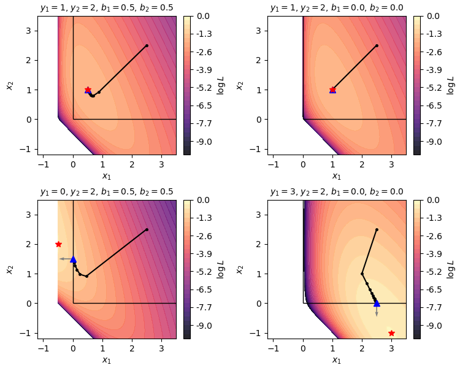

MLEM-FB Convergence
A self-contained proof for \(y \sim \operatorname{Poisson}(A\mathbf{x} + \mathbf{b})\) and \(A\) having full column rank
1 Introduction
The MLEM (Maximum Likelihood Expectation Maximisation) algorithm is the standard reconstruction method in emission tomography (PET, SPECT). It produces non-negative images and steadily improves the fit to the measured data at every iteration. But does it always find the non-negative image with highest Poisson log-likelihood? And if so, why?
This document gives a complete, self-contained proof that MLEM converges to the unique non-negative image that maximises the Poisson log-likelihood. We assume only basic calculus and probability; every mathematical step is explained.
2 Setup
2.1 The forward model
We measure \(I\) detector counts \(y_1, \ldots, y_I \in \{0, 1, 2, \ldots\}\) (the sinogram). The image to be recovered has \(J\) voxels with (unknown) activities \(x_1, \ldots, x_J \geq 0\), collected into a column vector \(\mathbf{x} \in \mathbb{R}^J\).
The forward model relates image to expected counts:
\[\bar{y}_i(\mathbf{x}) = \sum_{j=1}^{J} a_{ij}\, x_j + b_i = (A\mathbf{x} + \mathbf{b})_i, \qquad i = 1,\ldots,I,\]
where:
- \(A \in \mathbb{R}^{I \times J}_{\geq 0}\) is the system matrix with entries \(a_{ij} \geq 0\). Entry \(a_{ij}\) is the probability that an event emitted in voxel \(j\) is detected in bin \(i\).
- \(\mathbf{b} \in \mathbb{R}^I_{> 0}\) denotes the expectation of additive contaminations (scattered events in SPECT, and scatered and random coicidences in PET). We assume that the expectation \(\mathbf{b}\) is known (e.g. pre-estimated), and strictly positive.
We model each detector bin as an independent Poisson random variable:
\[y_i \sim \operatorname{Poisson}\!\bigl(\bar{y}_i(\mathbf{x})\bigr), \quad \text{independently for all } i.\]
2.2 The log-likelihood
The probability of observing count \(y_i\) when the expected count is \(\bar{y}_i\) is \(P(y_i) = e^{-\bar{y}_i}\,\bar{y}_i^{y_i}/y_i!\). Taking the logarithm and summing over all bins (and dropping terms that do not depend on \(\mathbf{x}\)) gives the Poisson log-likelihood:
\[\mathcal{L}(\mathbf{x}) = \sum_{i=1}^{I} \Bigl[y_i \log \bar{y}_i(\mathbf{x}) - \bar{y}_i(\mathbf{x})\Bigr].\]
Our goal is to find the image \(\hat{\mathbf{x}}\) that maximises \(\mathcal{L}(\mathbf{x})\) subject to \(\mathbf{x} \geq \mathbf{0}\) (non-negativity).
2.3 The MLEM update
We define the sensitivity of voxel \(j\) as the total detection probability summed over all detector bins:
\[s_j = \sum_{i=1}^{I} a_{ij} > 0, \qquad j = 1,\ldots,J.\]
Starting from an initial image \(\mathbf{x}^0 > \mathbf{0}\) (all voxels strictly positive), MLEM produces the sequence \(\mathbf{x}^0, \mathbf{x}^1, \mathbf{x}^2, \ldots\) via the update rule:
\[\boxed{x_j^{k+1} = \frac{x_j^k}{s_j} \sum_{i=1}^{I} a_{ij}\, \frac{y_i}{\bar{y}_i(\mathbf{x}^k)}, \qquad j = 1,\ldots,J.}\]
The ratio \(y_i / \bar{y}_i(\mathbf{x}^k)\) compares measured to predicted counts in bin \(i\): it equals 1 when the current estimate is perfect, is greater than 1 when the model under-predicts, and less than 1 when it over-predicts. These correction factors are back-projected into image space and normalised by the voxel sensitivity \(s_j\).
2.4 The full-rank assumption
We assume throughout that \(A\) has full column rank, meaning no non-zero vector \(\mathbf{v} \neq \mathbf{0}\) satisfies \(A\mathbf{v} = \mathbf{0}\) (the nullspace of \(A\) is trivial). Assuming full column rank simplifies the convergence proof. For the more general (and much more complex) case where \(A\) does not have full column rank, see (Salvo and Defrise 2019).
2.5 Two types of constrained optima
A crucial distinction runs throughout the proof. The constrained maximum \(\hat{\mathbf{x}}\) can be of two types, distinguished by whether the unconstrained maximum of \(\mathcal{L}\) is feasible.
Under the full-rank assumption \(\mathcal{L}\) is strictly concave (shown in Step 5), so in both cases \(\hat{\mathbf{x}}\) is unique.
2.6 Visualisation of the two cases
The figure below shows the Poisson log-likelihood \(\mathcal{L}(x_1, x_2)\) for a simple 2-voxel forward model
\[\bar{y}_1 = x_1 + b_1, \qquad \bar{y}_2 = x_1 + x_2 + b_2.\]
Each panel uses different measurements \((y_1, y_2)\) and background values \((b_1, b_2)\). The blue triangle marks the constrained maximum \(\hat{\mathbf{x}}\), the red star the unconstrained maximum, and the black dots 20 MLEM iterations starting from \(x_1 = x_2 = 2.5\). The top row shows interior solutions (all voxels active); the bottom row shows boundary solutions (one voxel zeroed out).

An interactive version of this figure — where you can adjust \(y_1, y_2, b_1, b_2\) with sliders and see the plot update live — is available as a separate page.
3 Proof Roadmap
Steps 1–3 imply that \(\mathcal{L}(\mathbf{x}^k)\) is monotonically increasing and bounded above, so it converges to some value \(\mathcal{L}^*\). Steps 4 and 5 show that the iterates themselves converge to \(\hat{\mathbf{x}}\).
4 Step 1: The Log-Likelihood is Bounded Above
The Poisson log-likelihood can be rewritten as:
\[\mathcal{L}(\mathbf{x}) = \sum_i \bigl(y_i \log y_i - y_i\bigr) - \underbrace{\sum_i \Bigl[y_i \log\tfrac{y_i}{\bar{y}_i} + \bar{y}_i - y_i\Bigr]}_{\geq\; 0}.\]
To see this, write \(y_i \log \bar{y}_i = y_i \log y_i - y_i\log(y_i/\bar{y}_i)\) and rearrange. The underlined term is a sum of generalised KL divergences \(d(y_i, \bar{y}_i) = y_i \log(y_i/\bar{y}_i) + \bar{y}_i - y_i \geq 0\) (each follows from \(\log u \leq u - 1\) with \(u = \bar{y}_i/y_i\)). Therefore:
\[\mathcal{L}(\mathbf{x}) \leq \sum_i \bigl(y_i \log y_i - y_i\bigr) =: \mathcal{L}_{\max} < \infty. \qquad \square\]
5 Step 2: MLEM Preserves Non-Negativity
Write the update as \(x_j^{k+1} = x_j^k \cdot f_j^k\), where the update factor for voxel \(j\) is
\[f_j^k = \frac{1}{s_j}\sum_{i=1}^{I} a_{ij}\,\frac{y_i}{\bar{y}_i(\mathbf{x}^k)}.\]
Because \(a_{ij}\geq 0\), \(y_i \geq 0\), and \(\bar{y}_i(\mathbf{x}^k) > 0\), we have \(f_j^k \geq 0\). Therefore \(x_j^k \geq 0 \Rightarrow x_j^{k+1} \geq 0\), and by induction \(\mathbf{x}^k \geq \mathbf{0}\) for all \(k \geq 0\). \(\square\)
A finer dichotomy. Since \(\bar{y}_i(\mathbf{x}^k) \geq b_i > 0\), the factor \(f_j^k\) is zero if and only if \(\sum_i a_{ij} y_i = 0\). Partition the voxels once and for all into
\[\mathcal{A} = \bigl\{j : {\textstyle\sum_i} a_{ij}y_i > 0\bigr\}, \qquad \mathcal{Z} = \bigl\{j : {\textstyle\sum_i} a_{ij}y_i = 0\bigr\}.\]
Voxels \(j\in\mathcal{Z}\): \(f_j^k = 0\) for every \(k\), so \(x_j^1 = 0\) and \(x_j^k = 0\) for all \(k\geq 1\). Furthermore, \(\partial\mathcal{L}/\partial x_j = \sum_i a_{ij}(y_i/\bar{y}_i - 1) = -s_j < 0\) everywhere on the feasible set, so \(\hat{x}_j = 0\). MLEM correctly identifies these voxels in a single step.
Voxels \(j\in\mathcal{A}\): \(f_j^k > 0\) for all \(k\) (since \(\bar{y}_i\geq b_i>0\)). Starting from \(\mathbf{x}^0>\mathbf{0}\), these voxels satisfy \(x_j^k > 0\) for all \(k\geq 0\) by induction.
6 Step 3: Each MLEM Update does not decrease the Log-Likelihood
This is the most important step. It uses the EM (Expectation–Maximisation) framework, a general-purpose strategy for maximum likelihood estimation whenever the observed data can be thought of as an incomplete version of some richer, easier-to-handle complete data.
6.1 The complete-data idea
Maximising \(\mathcal{L}(\mathbf{x})\) directly is hard because \(\log \bar{y}_i = \log(\sum_j a_{ij} x_j + b_i)\) couples all unknowns. The EM trick is to imagine we could also observe which voxel each detected event originated from — information the detector does not record.
Define the complete data \(n_{ij}\) as the (unobserved) number of events detected in bin \(i\) from voxel \(j\), and \(n_{i0}\) for background:
\[n_{ij} \sim \operatorname{Poisson}(a_{ij}\, x_j), \quad j \geq 1, \qquad n_{i0} \sim \operatorname{Poisson}(b_i), \qquad \text{all independent,}\]
with \(y_i = \sum_{j=0}^{J} n_{ij}\). The complete-data log-likelihood decouples over voxels:
\[\log p(\mathbf{n} \mid \mathbf{x}) = \sum_{j=1}^{J} \left[\log x_j \underbrace{\sum_i n_{ij}}_{\text{events from }j} - x_j \underbrace{\sum_i a_{ij}}_{s_j}\right] + \underbrace{\left[ \sum_i n_{i0} \log b_i - b_i \right]}_{\text{const. indep. of x}}\]
6.2 The \(Q\) function
Intuition: Since \(\mathbf{n}\) is never observed, we cannot maximise \(\log p(\mathbf{n}|\mathbf{x})\) directly. The E-step asks: given the current image \(\mathbf{x}^k\) and the measured counts \(\mathbf{y}\), what is the most reasonable imputation for the missing origin data \(\mathbf{n}\)? The answer — apportioning each measured count \(y_i\) back to the voxels in proportion to their predicted contributions — converts the coupled optimisation over all voxels into \(J\) independent one-voxel problems.
Since \(\mathbf{n}\) is not observed, EM replaces \(\log p(\mathbf{n}\mid\mathbf{x})\) by its conditional expectation given the data \(\mathbf{y}\) and current estimate \(\mathbf{x}^k\):
\[Q(\mathbf{x} \mid \mathbf{x}^k) = E\!\left[\log p(\mathbf{n}\mid\mathbf{x}) \;\Big|\; \mathbf{y},\, \mathbf{x}^k\right].\]
Using the Poisson splitting property (if independent Poisson variables sum to \(n\), their conditional joint distribution is Multinomial with probabilities proportional to their means - see Section 10.1), one shows:
\[E[n_{ij} \mid y_i, \mathbf{x}^k] = \frac{a_{ij}\, x_j^k}{\bar{y}_i(\mathbf{x}^k)}\, y_i =: \hat{n}_{ij}^k.\]
The observed count \(y_i\) is apportioned among voxels in proportion to their predicted contributions. Substituting:
\[Q(\mathbf{x} \mid \mathbf{x}^k) = \sum_{j=1}^{J} \left[\hat{n}_j^k \log x_j - s_j\, x_j\right] + \text{const}, \qquad \hat{n}_j^k = \sum_i \hat{n}_{ij}^k.\]
This is separable in \(x_j\): each voxel can be updated independently.
6.3 The fundamental identity
Intuition: We care about \(\mathcal{L}(\mathbf{x})\), but we can only easily optimise \(Q(\mathbf{x}|\mathbf{x}^k)\). The fundamental identity \(\mathcal{L} = Q - H\) is the bridge: it expresses the true log-likelihood as the surrogate \(Q\) minus an “entropy” term \(H\) that measures residual uncertainty about the missing data. As we will see, when we maximise \(Q\), the term \(H\) can only move in a favourable direction — so gains in \(Q\) are never fully cancelled, and \(\mathcal{L}\) cannot decrease.
From \(p(\mathbf{n}\mid\mathbf{x}) = p(\mathbf{y}\mid\mathbf{x})\cdot p(\mathbf{n}\mid\mathbf{y},\mathbf{x})\), taking logarithms and then the conditional expectation \(E[\,\cdot\mid\mathbf{y},\mathbf{x}^k]\):
\[Q(\mathbf{x}\mid\mathbf{x}^k) = \mathcal{L}(\mathbf{x}) + H(\mathbf{x}\mid\mathbf{x}^k),\]
where
\[H(\mathbf{x}\mid\mathbf{x}^k) = E\bigl[\log p(\mathbf{n}\mid\mathbf{y},\mathbf{x})\bigm|\mathbf{y},\mathbf{x}^k\bigr] = \sum_{\mathbf{n}} p(\mathbf{n}\mid\mathbf{y},\mathbf{x}^k)\, \log p(\mathbf{n}\mid\mathbf{y},\mathbf{x}).\]
In words: \(H(\mathbf{x}\mid\mathbf{x}^k)\) is the expected log-probability of the (unobserved) complete-data pattern \(\mathbf{n}\), where the expectation is taken over the distribution of \(\mathbf{n}\) implied by the current estimate \(\mathbf{x}^k\), but the log-probability itself is evaluated under the candidate image \(\mathbf{x}\). When \(\mathbf{x}=\mathbf{x}^k\) this is the (negative) conditional entropy of the hidden data given the current model.
Rearranging gives the fundamental identity:
\[\boxed{\mathcal{L}(\mathbf{x}) = Q(\mathbf{x}\mid\mathbf{x}^k) - H(\mathbf{x}\mid\mathbf{x}^k).}\]
6.4 The EM guarantee: \(\mathcal{L}\) never decreases
Intuition: The argument decomposes the change in \(\mathcal{L}\) into two pieces, each guaranteed non-negative for a different reason. Term A is non-negative by construction: we chose \(\mathbf{x}^{k+1}\) to maximise \(Q\), so it cannot be worse than \(\mathbf{x}^k\) at \(Q\). Term B is non-negative because it equals a KL divergence — a measure of dissimilarity between two probability distributions that is always \(\geq 0\). Neither term can hurt us, so every MLEM step is at least as good as the previous one.
The M-step sets \(\mathbf{x}^{k+1} = \arg\max_{\mathbf{x}\geq\mathbf{0}} Q(\mathbf{x}\mid\mathbf{x}^k)\). Using the fundamental identity at \(\mathbf{x}^{k+1}\) and \(\mathbf{x}^k\):
\[\mathcal{L}(\mathbf{x}^{k+1}) - \mathcal{L}(\mathbf{x}^k) = \underbrace{\bigl[Q(\mathbf{x}^{k+1}\mid\mathbf{x}^k) - Q(\mathbf{x}^k\mid\mathbf{x}^k)\bigr]}_{\text{Term A}\;\geq\;0} + \underbrace{\bigl[H(\mathbf{x}^k\mid\mathbf{x}^k) - H(\mathbf{x}^{k+1}\mid\mathbf{x}^k)\bigr]}_{\text{Term B}\;\geq\;0}.\]
Term A \(\geq 0\): \(\mathbf{x}^{k+1}\) maximises \(Q(\cdot\mid\mathbf{x}^k)\) by construction.
Term B \(\geq 0\): Expanding using the definition of \(H\):
\[H(\mathbf{x}^k\mid\mathbf{x}^k) - H(\mathbf{x}^{k+1}\mid\mathbf{x}^k) = \sum_{\mathbf{n}} p(\mathbf{n}\mid\mathbf{y},\mathbf{x}^k)\, \log\frac{p(\mathbf{n}\mid\mathbf{y},\mathbf{x}^k)}{p(\mathbf{n}\mid\mathbf{y},\mathbf{x}^{k+1})} = D_{\mathrm{KL}}\!\bigl(p(\mathbf{n}\mid\mathbf{y},\mathbf{x}^k)\,\|\, p(\mathbf{n}\mid\mathbf{y},\mathbf{x}^{k+1})\bigr) \geq 0.\]
This is a KL divergence between two distributions over the hidden data: how likely the current model \(\mathbf{x}^k\) thinks each origin pattern \(\mathbf{n}\) is, versus how likely the updated model \(\mathbf{x}^{k+1}\) does. KL divergence is always non-negative (see callout below).
Therefore \(\mathcal{L}(\mathbf{x}^{k+1}) \geq \mathcal{L}(\mathbf{x}^k)\). \(\square\)
6.5 The M-step gives the MLEM update
Maximise \(Q(\mathbf{x}\mid\mathbf{x}^k) = \sum_j [\hat{n}_j^k \log x_j - s_j x_j]\) over \(x_j \geq 0\). Each term is strictly concave in \(x_j\) with an unconstrained maximum at \(x_j = \hat{n}_j^k / s_j > 0\). Since this is already non-negative, the constrained maximum equals the unconstrained one:
\[\frac{\partial Q}{\partial x_j} = \frac{\hat{n}_j^k}{x_j} - s_j = 0 \;\Longrightarrow\; x_j^{k+1} = \frac{\hat{n}_j^k}{s_j} = \frac{x_j^k}{s_j} \sum_i a_{ij}\,\frac{y_i}{\bar{y}_i(\mathbf{x}^k)},\]
which is exactly the MLEM formula. \(\square\)
Rewrite \(\hat{n}_j^k = x_j^k \sum_i a_{ij}\,y_i/\bar{y}_i(\mathbf{x}^k)\) and note that the gradient of the log-likelihood is
\[\frac{\partial\mathcal{L}}{\partial x_j}(\mathbf{x}^k) = \sum_i a_{ij}\!\left(\frac{y_i}{\bar{y}_i(\mathbf{x}^k)}-1\right) = \frac{\hat{n}_j^k}{x_j^k} - s_j \qquad (x_j^k>0).\]
Substituting into the MLEM formula gives
\[\boxed{x_j^{k+1} = x_j^k + \frac{x_j^k}{s_j}\, \frac{\partial\mathcal{L}}{\partial x_j}(\mathbf{x}^k).} \tag{$**$}\]
This is a gradient ascent step with a diagonal preconditioner \(P_j^k = x_j^k/s_j\). Two immediate consequences used throughout:
- A-voxels (\(j\in\mathcal{A}\)): \(x_j^k>0\), so \(x_j^{k+1}=x_j^k\) if and only if \(\partial\mathcal{L}/\partial x_j(\mathbf{x}^k)=0\).
- Z-voxels (\(j\in\mathcal{Z}\)): \(x_j^k=0\) for all \(k\geq 1\); the preconditioner vanishes and the voxel is permanently pinned at zero.
7 Step 4: The Iterates Are Bounded
Why boundedness matters. From Steps 1 and 3, \(\{\mathcal{L}(\mathbf{x}^k)\}\) is monotonically non-decreasing and bounded above, so it converges to some limit \(\mathcal{L}^*\). However, knowing that the values \(\mathcal{L}(\mathbf{x}^k)\) converge tells us nothing directly about where the iterates \(\mathbf{x}^k\) end up — they could in principle drift to infinity while the likelihood still increases. To extract a concrete limit point, we will apply the Bolzano–Weierstrass theorem in Step 5: every bounded sequence in \(\mathbb{R}^J\) has a convergent subsequence. This requires the iterates to stay in a bounded region, which we establish now.
The super-level set. Since \(\mathcal{L}(\mathbf{x}^k)\) is non-decreasing, every iterate satisfies \(\mathcal{L}(\mathbf{x}^k)\geq\mathcal{L}(\mathbf{x}^0)\) and therefore lies in the super-level set
\[\mathcal{S} = \{\mathbf{x} \geq \mathbf{0} : \mathcal{L}(\mathbf{x}) \geq \mathcal{L}(\mathbf{x}^0)\}.\]
It suffices to show \(\mathcal{S}\) is bounded (it is also closed, hence compact). The key insight is: if \(\mathcal{L}(\mathbf{x})\to-\infty\) as \(\|\mathbf{x}\|\to\infty\), then no sequence in \(\mathcal{S}\) can escape to infinity — any such sequence would eventually violate the requirement \(\mathcal{L}(\mathbf{x})\geq\mathcal{L}(\mathbf{x}^0)>-\infty\).
Physical intuition. As we place more and more activity into the image, the model predicts ever-larger expected counts \(\bar{y}_i\). The \(-\bar{y}_i\) terms in \(\mathcal{L}\) penalise this over-prediction, and this penalty grows faster than the \(y_i\log\bar{y}_i\) gain — because \(t\) grows strictly faster than \(\log t\). So the log-likelihood must eventually decrease, and indeed go to \(-\infty\), for any sequence of images with unbounded total activity.
Formal argument: Each summand can be written as
\[y_i \log \bar{y}_i - \bar{y}_i = \bar{y}_i\!\left(\frac{y_i \log \bar{y}_i}{\bar{y}_i} - 1\right).\]
Since \(\log(t)/t \to 0\) as \(t\to\infty\) (L’Hôpital: \(\lim_{t\to\infty}\frac{\log t}{t} = \lim_{t\to\infty}\frac{1/t}{1} = 0\)), the bracket tends to \(-1\), so each summand is eventually \(\leq -\bar{y}_i/2\). The finitely many remaining (small-\(\bar{y}_i\)) terms are bounded above by a constant \(C\), giving
\[\mathcal{L}(\mathbf{x}) \;\leq\; C - \tfrac{1}{2}\,\mathbf{1}^\top A\mathbf{x}.\]
Since \(A\) has full column rank, \(s_j = \sum_i a_{ij} > 0\) for every \(j\), so \(\mathbf{1}^\top A\mathbf{x} = \sum_j s_j x_j \to \infty\) as \(\|\mathbf{x}\|\to\infty\) with \(\mathbf{x}\geq\mathbf{0}\). Therefore \(\mathcal{L}(\mathbf{x})\to-\infty\).
If \(\mathcal{S}\) were unbounded there would exist a sequence \(\mathbf{x}^{(n)}\in\mathcal{S}\) with \(\|\mathbf{x}^{(n)}\|\to\infty\), but then \(\mathcal{L}(\mathbf{x}^{(n)})\to-\infty\), contradicting \(\mathcal{L}(\mathbf{x}^{(n)})\geq\mathcal{L}(\mathbf{x}^0)>-\infty\). Hence \(\mathcal{S}\) is bounded, and all iterates \(\mathbf{x}^k\in\mathcal{S}\) are bounded. \(\square\)
8 Step 5: Convergence to the Constrained ML Solution
The proof strategy. We have established that the log-likelihood values \(\mathcal{L}(\mathbf{x}^k)\) are non-decreasing (Step 3) and bounded above (Step 1), so they converge to some limit \(\mathcal{L}^*\). We have also established that the iterates \(\mathbf{x}^k\) remain in a compact set \(\mathcal{S}\) (Step 4). What we still need to show is that the iterates themselves — not just the likelihood values — converge, and that they converge to the right limit \(\hat{\mathbf{x}}\).
The argument proceeds in four stages:
- Strict concavity guarantees the constrained maximum \(\hat{\mathbf{x}}\) is unique — there is only one target to converge to.
- \(\hat{\mathbf{x}}\) is a fixed point of MLEM — once the algorithm reaches the answer, it stays there.
- Bolzano–Weierstrass (applied to the bounded sequence from Step 4) gives a subsequence \(\mathbf{x}^{k_m}\) converging to some accumulation point \(\mathbf{x}^*\).
- KKT conditions then force \(\mathbf{x}^* = \hat{\mathbf{x}}\); since every subsequence has the same limit, the full sequence converges too.
8.1 Strict concavity and uniqueness of \(\hat{\mathbf{x}}\)
Intuition: The proof hinges on there being a unique best image. If the log-likelihood had several equally good maxima, the iterates could oscillate between them and never settle. Strict concavity rules this out: the likelihood landscape is “bowl-shaped” — it has exactly one peak over the non-negative orthant, so there is only one target to converge to.
Geometrically, strict concavity means the log-likelihood surface curves strictly downward in every direction — like a bowl turned upside down — so any two distinct points on the surface can share at most one maximum.
Formal argument: The Hessian (the matrix of second derivatives, which describes the curvature) of \(\mathcal{L}\) is:
\[\nabla^2\mathcal{L}(\mathbf{x}) = -A^\top D(\mathbf{x})\,A, \qquad D(\mathbf{x}) = \operatorname{diag}\!\left(\frac{y_i}{\bar{y}_i(\mathbf{x})^2}\right) > 0.\]
Because \(A\) has full column rank, \(A^\top D A\) is positive definite for any diagonal \(D > 0\): for any non-zero vector \(\mathbf{v}\), \(\mathbf{v}^\top A^\top D A \mathbf{v} = \|D^{1/2}A\mathbf{v}\|^2 > 0\) (since \(A\mathbf{v} \neq \mathbf{0}\) by the full column rank assumption). Therefore \(\nabla^2\mathcal{L}\) is negative definite everywhere, which means \(\mathcal{L}\) is strictly concave. A strictly concave function over a convex set has at most one maximum, so \(\hat{\mathbf{x}}\) is unique.
8.2 \(\hat{\mathbf{x}}\) is a fixed point of MLEM
Intuition: A necessary condition for convergence is that the limit point is a fixed point — a point where one more MLEM step leaves the image unchanged. If running MLEM on the answer produced a different image, the sequence could never settle there. We need to verify that the answer \(\hat{\mathbf{x}}\) is self-consistent in this sense.
Formal argument: Let \(F\) denote one MLEM step. We show \(F(\hat{\mathbf{x}}) = \hat{\mathbf{x}}\).
Active voxels (\(\hat{x}_j > 0\)): The KKT condition gives \(\partial\mathcal{L}/\partial x_j\big|_{\hat{\mathbf{x}}} = 0\): we are at the gradient-zero point, so the gradient ascent step \((**)\) contributes zero correction: \(F(\hat{\mathbf{x}})_j = \hat{x}_j + \frac{\hat{x}_j}{s_j}\cdot 0 = \hat{x}_j\). \(\checkmark\)
Inactive voxels (\(\hat{x}_j = 0\)): The multiplicative structure gives \(F(\hat{\mathbf{x}})_j = 0 \times (\ldots) = 0 = \hat{x}_j\) — MLEM cannot create activity from nothing, regardless of the gradient. \(\checkmark\)
8.3 The log-likelihood values converge
Intuition: Before we can talk about where the iterates go, we need to know where the likelihood values go. This is easier to establish — we only need to count and bound, not track the images themselves. Knowing \(\mathcal{L}^*\) gives us something concrete to aim at when we later argue about the images.
Formal argument: From Steps 1 and 3: \(\{\mathcal{L}(\mathbf{x}^k)\}\) is non-decreasing and bounded above. By the monotone convergence theorem — a non-decreasing sequence bounded above must converge — it converges:
\[\mathcal{L}(\mathbf{x}^k) \;\longrightarrow\; \mathcal{L}^* \;\leq\; \mathcal{L}(\hat{\mathbf{x}}).\]
We will show \(\mathcal{L}^* = \mathcal{L}(\hat{\mathbf{x}})\), i.e., the sequence actually achieves the maximum value, not just some smaller limit.
8.4 A convergent subsequence exists
Intuition: We cannot yet claim the full sequence \(\mathbf{x}^k\) converges — it could, in principle, bounce around within the compact set \(\mathcal{S}\) without settling anywhere. Instead, we extract a subsequence that does converge (like identifying a train that stops at a fixed station even if the full timetable is complicated). Once we know what the subsequence converges to, we can work backward to conclude about the full sequence.
Formal argument: Since all iterates lie in the compact set \(\mathcal{S}\) (Step 4), the Bolzano–Weierstrass theorem (every bounded sequence in \(\mathbb{R}^J\) has a convergent subsequence) guarantees a subsequence:
\[\mathbf{x}^{k_m} \;\longrightarrow\; \mathbf{x}^* \in \mathcal{S}.\]
Because \(\mathbf{x}^{k_m}\) is a subsequence of \(\{\mathbf{x}^k\}\) and \(\mathcal{L}\) is continuous:
\[\mathcal{L}(\mathbf{x}^*) = \lim_{m\to\infty}\mathcal{L}(\mathbf{x}^{k_m}) = \mathcal{L}^*.\]
(Two facts combine: a subsequence of a convergent sequence shares its limit; \(\mathcal{L}\) is continuous so the limit commutes with the function evaluation.) The accumulation point \(\mathbf{x}^*\) therefore achieves the limiting likelihood \(\mathcal{L}^*\).
8.5 Every accumulation point equals \(\hat{\mathbf{x}}\)
Intuition: We now know there exists a convergent subsequence with limit \(\mathbf{x}^*\). But is \(\mathbf{x}^*\) the correct answer \(\hat{\mathbf{x}}\)? We use two facts together: (i) the likelihood increments shrink to zero as the algorithm progresses, which means \(\mathbf{x}^*\) must look like a fixed point of MLEM; and (ii) the only fixed point that satisfies the KKT optimality conditions is the unique maximiser \(\hat{\mathbf{x}}\). This pins down the limit.
Formal argument: Because \(\mathcal{L}(\mathbf{x}^k)\) is non-decreasing and bounded above (Steps 1 & 3), it converges and its increments vanish:
\[\mathcal{L}(\mathbf{x}^{k+1}) - \mathcal{L}(\mathbf{x}^k) \;\longrightarrow\; 0.\]
For the subsequence \(\mathbf{x}^{k_m}\to\mathbf{x}^*\), continuity of \(F\) and \(\mathcal{L}\) then gives
\[\mathcal{L}(F(\mathbf{x}^*)) - \mathcal{L}(\mathbf{x}^*) = \lim_{m\to\infty}\bigl[\mathcal{L}(\mathbf{x}^{k_m+1}) - \mathcal{L}(\mathbf{x}^{k_m})\bigr] = 0. \tag{$*$}\]
In words: applying one more MLEM step to \(\mathbf{x}^*\) does not change the likelihood. By Step 3, this is only possible if \(\mathbf{x}^*\) is itself a fixed point of MLEM — a candidate maximum.
We now verify the KKT optimality conditions at \(\mathbf{x}^*\) voxel by voxel, using the gradient ascent form \((**)\). Meeting these conditions is both necessary and sufficient (by strict concavity) for \(\mathbf{x}^*\) to be the constrained maximiser \(\hat{\mathbf{x}}\).
\(j\in\mathcal{Z}\): \(x_j^*=0\) and \(\partial\mathcal{L}/\partial x_j = -s_j<0\) everywhere on the feasible set — adding activity to this voxel would only hurt the likelihood. KKT satisfied. \(\checkmark\)
\(j\in\mathcal{A},\; x_j^*>0\): From \((*)\), \(\mathcal{L}(F(\mathbf{x}^*))=\mathcal{L}(\mathbf{x}^*)\). By Step 3, MLEM strictly increases \(\mathcal{L}\) unless at a fixed point, so \(F(\mathbf{x}^*)=\mathbf{x}^*\). Since \(x_j^*>0\), the gradient ascent step \((**)\) must be zero: \(\partial\mathcal{L}/\partial x_j\big|_{\mathbf{x}^*}=0\). KKT satisfied. \(\checkmark\)
\(j\in\mathcal{A},\; x_j^*=0\): This is the trickiest case: \(\mathbf{x}^*\) has a voxel driven to zero even though the observed data suggest some signal there. Since \(x_j^{k_m}>0\) for all \(m\) (Step 2) and \(x_j^{k_m}\to 0\), rewrite the MLEM update using \((**)\) as a multiplicative factor:
\[x_j^{k_m+1} = x_j^{k_m}\!\left(1 + \frac{1}{s_j} \frac{\partial\mathcal{L}}{\partial x_j}(\mathbf{x}^{k_m})\right).\]
Note: using the additive form of \((**)\) directly would be misleading here — the step \(\tfrac{x_j^{k_m}}{s_j}\nabla_j\mathcal{L}\to 0\) as \(x_j^{k_m}\to 0\), even when the gradient is positive, so one cannot conclude from the step size alone that the sequence grows. What matters is the ratio \(x_j^{k_m+1}/x_j^{k_m}\), which equals the factor in parentheses above and does not vanish as \(x_j^{k_m}\to 0\).
If \(\partial\mathcal{L}/\partial x_j\big|_{\mathbf{x}^*}>0\), then by continuity there exists \(\delta>0\) such that \(\partial\mathcal{L}/\partial x_j(\mathbf{x}^{k_m})\geq\delta\) for all sufficiently large \(m\), giving
\[x_j^{k_m+1} \;\geq\; \left(1+\frac{\delta}{s_j}\right)x_j^{k_m}.\]
The sequence grows geometrically at rate \(1+\delta/s_j>1\), contradicting \(x_j^{k_m}\to 0\). Therefore the gradient must be \(\leq 0\): \(\partial\mathcal{L}/\partial x_j\big|_{\mathbf{x}^*}\leq 0\). KKT satisfied. \(\checkmark\)
Bullets 1 and 3 together show that an accumulation point can only have a zero component where \(\hat{\mathbf{x}}\) is also zero: if \(x_j^*=0\), the KKT condition \(\partial\mathcal{L}/\partial x_j\leq 0\) holds at \(\mathbf{x}^*\), which — together with the full KKT structure — forces \(\mathbf{x}^*=\hat{\mathbf{x}}\) and hence \(\hat{x}_j=0\). In particular, \(\mathbf{x}^*=\mathbf{0}\) is only consistent with the KKT conditions if \(\hat{\mathbf{x}}=\mathbf{0}\), i.e. all voxels are in \(\mathcal{Z}\) and no counts are observed anywhere.
Since \(\mathcal{L}\) is strictly concave, the KKT conditions are necessary and sufficient for the unique constrained maximum, so \(\mathbf{x}^*=\hat{\mathbf{x}}\), and therefore \(\mathcal{L}^*=\mathcal{L}(\mathbf{x}^*)=\mathcal{L}(\hat{\mathbf{x}})\). \(\square\)
8.6 The full sequence converges
Intuition: We have shown that any subsequence that converges must converge to \(\hat{\mathbf{x}}\). Since the full sequence is bounded (Step 4), it cannot escape to infinity; and since every accumulation point is \(\hat{\mathbf{x}}\), the sequence has no other place to go. Intuitively: if a sequence is trapped in a bounded region and every cluster point is the same single value, the sequence must converge to that value.
Formal argument: Every convergent subsequence of \(\{\mathbf{x}^k\}\) shares the same limit \(\hat{\mathbf{x}}\) by the argument above: any accumulation point achieves \(\mathcal{L}^* = \mathcal{L}(\hat{\mathbf{x}})\), and strict concavity forces it to equal \(\hat{\mathbf{x}}\). Since the sequence is bounded (Step 4), it has at least one accumulation point — and they are all \(\hat{\mathbf{x}}\). A bounded sequence with a unique accumulation point must converge to it:
\[\mathbf{x}^k \;\longrightarrow\; \hat{\mathbf{x}} \quad \text{as } k \to \infty. \qquad \square\]
9 Summary
| Step | What we showed | Key tool |
|---|---|---|
| 1 | \(\mathcal{L}(\mathbf{x})\) bounded above by \(\mathcal{L}_{\max}\) | \(\log u \leq u-1\) (generalised KL) |
| 2 | \(\mathbf{x}^k > \mathbf{0}\) for all \(k\) (from \(\mathbf{x}^0 > \mathbf{0}\)) | Multiplicative structure of MLEM |
| 3 | \(\mathcal{L}(\mathbf{x}^{k+1}) > \mathcal{L}(\mathbf{x}^k)\) for \(\mathbf{x}^k \neq \hat{\mathbf{x}}\) | EM framework (\(Q\) function + KL \(\geq 0\)) |
| 4 | \(\{\mathbf{x}^k\} \subset \mathcal{S}\) (compact) | Coercivity of \(\mathcal{L}\) via L’Hôpital (\(\log t / t \to 0\)) |
| 5 | \(\mathbf{x}^k \to \hat{\mathbf{x}}\) | Bolzano–Weierstrass + strict concavity + KKT |
Step 3 is the heart of the proof: the EM framework guarantees progress at every step, with the KL divergence as the reason. Steps 4 and 5 ensure this progress is not wasted — the sequence stays bounded and the accumulated improvements converge to the correct answer, whether \(\hat{\mathbf{x}}\) lies in the interior of \(\mathbf{x} \geq \mathbf{0}\) (all voxels active) or on its boundary (some voxels zeroed out).
10 Appendix
10.1 The conditional expectation via Poisson splitting
Setup. In the complete-data model, each detector bin \(i\) receives contributions from \(J\) image voxels and one background source, all independently Poisson distributed:
\[n_{ij} \sim \operatorname{Poisson}(a_{ij}\,x_j), \quad j = 1,\ldots,J, \qquad n_{i0} \sim \operatorname{Poisson}(b_i),\]
where \(n_{ij}\) is the (unobserved) number of events from voxel \(j\) detected in bin \(i\), and \(n_{i0}\) is the (unobserved) background count. The observed total is
\[y_i = n_{i0} + \sum_{j=1}^{J} n_{ij}.\]
There are thus \(J+1\) independent Poisson components summing to \(y_i\), with total mean \(\bar{y}_i(\mathbf{x}) = b_i + \sum_j a_{ij}x_j\).
Poisson splitting property. Let \(N_0, N_1, \ldots, N_J\) be independent Poisson random variables with means \(\lambda_0, \lambda_1, \ldots, \lambda_J\), and let \(N = \sum_{j=0}^{J} N_j \sim \operatorname{Poisson}(\lambda)\), \(\lambda = \sum_{j=0}^{J} \lambda_j\). Then the conditional distribution of \((N_0, N_1, \ldots, N_J)\) given \(N = n\) is multinomial:
\[(N_0, N_1, \ldots, N_J) \mid N = n \;\sim\; \operatorname{Multinomial}\!\left(n;\; \frac{\lambda_0}{\lambda}, \frac{\lambda_1}{\lambda}, \ldots, \frac{\lambda_J}{\lambda}\right).\]
Proof. The joint probability of \((N_0 = n_0, N_1 = n_1, \ldots, N_J = n_J)\) with \(\sum_{j=0}^{J} n_j = n\) factors as a product of Poisson probabilities:
\[P(N_0=n_0, \ldots, N_J=n_J) = \prod_{j=0}^{J} \frac{e^{-\lambda_j}\lambda_j^{n_j}}{n_j!} = e^{-\lambda}\frac{\prod_{j=0}^{J}\lambda_j^{n_j}}{\prod_{j=0}^{J}n_j!}.\]
Dividing by \(P(N=n) = e^{-\lambda}\lambda^n/n!\) gives:
\[P(N_0=n_0,\ldots,N_J=n_J \mid N=n) = \frac{n!}{\prod_{j=0}^{J} n_j!} \prod_{j=0}^{J}\!\left(\frac{\lambda_j}{\lambda}\right)^{n_j},\]
which is the \(\operatorname{Multinomial}(n;\,\lambda_0/\lambda,\ldots,\lambda_J/\lambda)\) probability mass function.
Application. At iteration \(k\), identify \(\lambda_0 = b_i\) and \(\lambda_j = a_{ij}x_j^k\) for \(j\geq 1\), so that \(\lambda = \bar{y}_i(\mathbf{x}^k)\). By the splitting property, conditioned on the observed total \(y_i\):
\[(n_{i0},\, n_{i1}, \ldots, n_{iJ}) \mid y_i,\, \mathbf{x}^k \;\sim\; \operatorname{Multinomial}\!\left(y_i;\; \frac{b_i}{\bar{y}_i(\mathbf{x}^k)},\, \frac{a_{i1}x_1^k}{\bar{y}_i(\mathbf{x}^k)},\,\ldots,\, \frac{a_{iJ}x_J^k}{\bar{y}_i(\mathbf{x}^k)}\right).\]
Using \(E[N_j \mid N=n] = n\cdot p_j\) for each component:
\[\hat{n}_{i0}^k \;:=\; E[n_{i0}\mid y_i,\mathbf{x}^k] = \frac{b_i}{\bar{y}_i(\mathbf{x}^k)}\,y_i, \qquad \boxed{\hat{n}_{ij}^k \;:=\; E[n_{ij}\mid y_i,\mathbf{x}^k] = \frac{a_{ij}\,x_j^k}{\bar{y}_i(\mathbf{x}^k)}\,y_i.}\]
The observed count \(y_i\) is thus apportioned among all \(J+1\) sources in proportion to their predicted contributions: the background receives fraction \(b_i/\bar{y}_i\), and voxel \(j\) receives fraction \(a_{ij}x_j^k/\bar{y}_i\).
Why \(n_{i0}\) drops out of the M-step. The Q function sums over all complete-data log-likelihood terms:
\[Q(\mathbf{x}\mid\mathbf{x}^k) = \underbrace{\sum_{j=1}^{J}\!\left[\hat{n}_j^k\log x_j - s_j x_j\right]}_{\text{depends on }\mathbf{x}} +\underbrace{\sum_{i}\!\left[\hat{n}_{i0}^k\log b_i - b_i\right]}_{\text{constant w.r.t.\ }\mathbf{x}}, \qquad \hat{n}_j^k = \sum_i \hat{n}_{ij}^k.\]
Because \(b_i\) is a known constant, the background term does not depend on \(\mathbf{x}\) and plays no role in the M-step maximisation. The update formula for the image voxels is therefore unchanged by the presence of background.